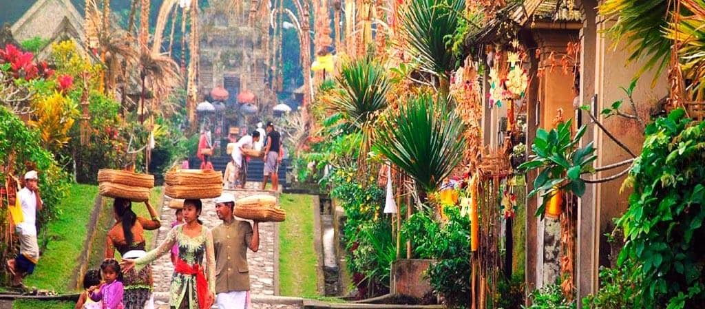

Ni Wayan Sumartini Saraswati
Desember, 2023
BIG DATA ANALYTICS UNTUK PARIWISATA BUDAYA
PARIWISATA BUDAYA
Pariwisata berbasis budaya (Cultural Tourism) adalah pariwisata yang memanfaatkan kebudayaan sebagai daya tarik objek wisata. Di destinasi wisata tersebut, wisatawan akan merasakan dan mempelajari berbagai kebudayaan tertentu. Secara positif adanya cultural tourism dapat dimanfaatkan sebagai objek daya tarik wisatawan yang dapat melestarikan warisan budaya (Mengenal Pariwisata Berbasis Budaya (Cultural Tourism) - PT Eticon Rekayasa Teknik, 2021). Pariwisata ini dibedakan dari wisata alam atau wisata petualangan.

Desa Penglipuran Bangli, Sumber (Penglipuran Bali: World’s Third Cleanest Village - Indonesia Travel, n.d.)
Ada beberapa unsur budaya yang menarik minat wisatawan pada sebuah destinasi antara lain bahasa, tradisi, kerajinan tangan, makanan, musik dan kesenian, sejarah, agama, arsitektur, dan pakaian.
Beberapa daerah di Indonesia telah mengembangkan pariwisata budaya sebagai pondasi industri pariwisata di daerah tersebut seperti Yogyakarta dan Toraja. Bali sebagai salah satu tujuan wisata populer di Indonesia juga mengembangkan pariwisata berlandaskan kepada kebudayaan Bali yang dijiwai oleh agama Hindu dengan falsafah Tri Hita Karana.
Begitu berperannya pariwisata budaya dalam mendukung kelangsungan pariwisata di suatu daerah menyebabkan penting pula untuk melakukan kajian penelitian untuk mendukung kelangsungan pariwisata budaya. Salah satunya adalah kajian big data analytics.
PENELITIAN BIG DATA ANALYTICS UNTUK MENDUKUNG PARIWISATA BUDAYA
Membangun tipologi empiris wisatawan budaya internasional yang telah mengunjungi Makau berdasarkan ulasan mereka di TripAdvisor merupakan penelitian dari (Qi et al., 2018). Kategorisasi data berdasarkan framework lima jenis wisatawan budaya. 100 istilah teratas dengan frekuensi tertinggi diekstraksi sebagai kata kunci untuk menyusun lima kategori mengikuti kerangka tipologi yang telah dijelaskan sebelumnya. Lima jenis wisatawan budaya tersebut adalah Sightseeing cultural tourist (SiCT), Purposeful cultural tourist (PCT), Serendipitous cultural tourist (SeCT), Incidental cultural tourists (ICT), dan Casual tourists (CT).

Kerangka analitik dari tinjauan literatur penelitian big data tourism, sumber (Li et al., 2018)
Berdasarkan data terbuka, penelitian oleh (Yang & Stienmetz, 2018) mengembangkan kerangka kerja untuk mencocokkan event dan pemesanan hotel berdasarkan kedekatan geografis. Penelitian kedua menerapkan penambangan teks di media sosial untuk memahami tipologi wisata budaya. Berdasarkan ulasan TripAdvisor, studi ini mengusulkan kerangka kerja empat langkah untuk mengklasifikasikan wisatawan budaya.
Perkembangan dunia hospitality saat ini sangat terbantu dengan perkembangan yang pesat dari teknologi informasi. Setidaknya bidang hospitality saat ini telah menggunakan Property Management System (PMS) untuk membantu mengelola jalannya usaha dengan baik. PMS adalah sebuah sistem terintegrasi yang menyediakan pengelolaan reservasi dan pengalaman tamu hingga dihasilkannya berbagai laporan yang dibutuhkan seperti profit and loss report, expense report dan revenue report. Online PMS berbasis data cloud menjadi lebih populer beberapa tahun terakhir karena menawarkan fleksibilitas akses dan efisiensi biaya. Perusahaan tidak lagi perlu menginvestasikan biaya untuk server lokal dan pengadaan LAN maupun WAN. Dukungan media penyimpanan cloud serta kapasitas internet yang memadai menjadi hal yang sangat mendukung majunya perkembangan online PMS beberapa tahun terakhir.
Studi oleh (Gulati, 2021) dibagi menjadi dua bagian, pertama untuk memberikan kerangka kerja untuk memahami sentimen publik melalui Twitter untuk wawasan pariwisata, kedua untuk memberikan wawasan real-time dari tiga situs warisan India yaitu Taj Mahal, Benteng Merah dan Kuil Emas dengan mengekstraksi 5.000 tweet masing-masing (n 5 15.000) menggunakan Twitter API. Di antara ketiga tempat wisata tersebut, jumlah sentimen positif terbesar adalah untuk Taj Mahal dan Kuil Emas dengan masing-masing sekitar 25%. Sedangkan sentimen negatif paling banyak terlihat pada Benteng Merah (17%). Di antara emosi positif, sentimen kegembiraan maksimum (12%) dapat dilihat di Kuil Emas dan kepercayaan (21%) di Benteng Merah. Dalam hal emosi negatif, ketakutan (13%) dapat dilihat di benteng Merah. Secara keseluruhan, situs warisan India memiliki sentimen positif (20%), yang melampaui sentimen negatif (13%). Dan dapat dikatakan bahwa secara keseluruhan polaritasnya menuju positif.